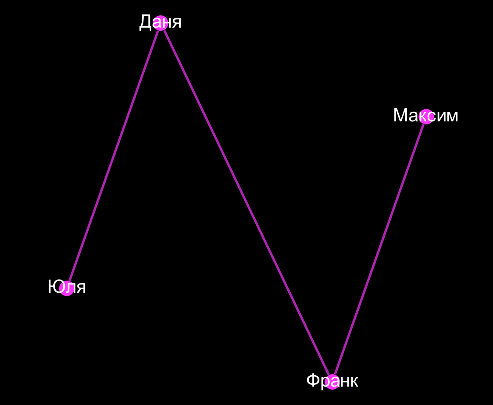
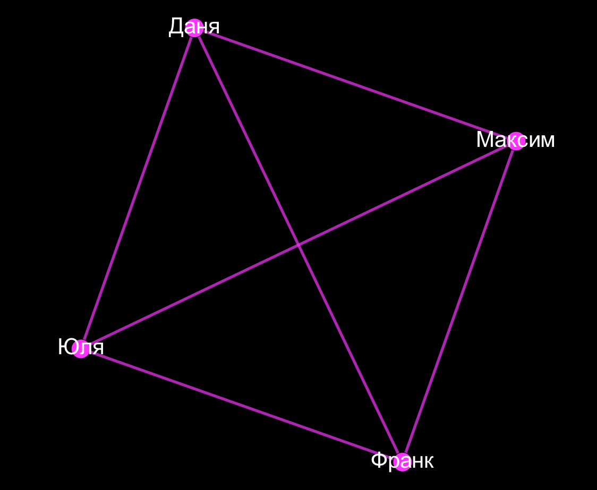
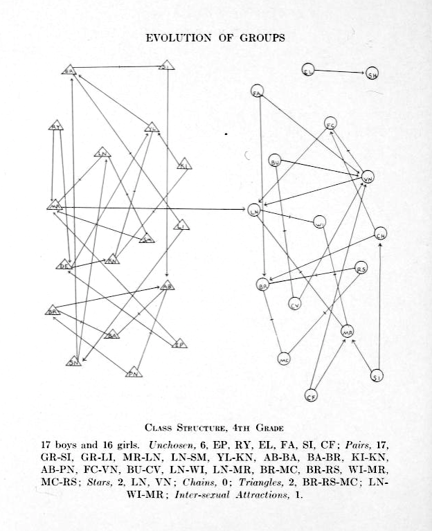
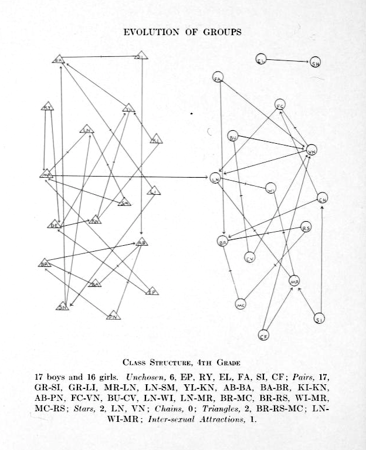

Что показал сетевой анализ вселенной Marvel?
Alberich, R., Miro-Julia, J., Rossello, F. Marvel universe looks almost like a real social network. 2002.
P. M. Gleiser. How to become a superhero. Journal of Statistical Mechanics: Theory and Experiment, (09):P09020, 2007.

Сравнение сетей 60 британских романов
- Elson, D. K., Dames, N. and McKeown, K. (2010), Extracting Social Networks from Literary Fiction, Proceedings of ACL 2010, Uppsala, Sweden.
Подключаются филологи!

Франко Моретти, «Теория сетей и анализ сюжета» (2011)
Моретти о раскрытии роли Горацио через сети
Though Horatio is an old fixation of mine, I had never fully understood his role in Hamlet until I looked at the play’s network structure.
Franco Moretti. “Distant Reading”
Главная идея Моретти — "дальнее" чтение (distant reading)
Literature scholars should stop reading books and start counting, graphing, and mapping them instead
Moretti, 2005
Масштабирование исследований

тут и глазами можно что-то ухватывать

тут и глазами можно что-то ухватывать

Гете и Шекспир


Можно смотреть и другие формальные метрики
Например, плотность
 
Плотности комедии и трагедии отличаются

Теперь это можно делать на русском материале!

Плотности комедий и не-комедий

Осторожно, предварительные данные!
Интересно, а какие русские пьесы обладают свойствами "малого мира"?

Приглядимся к Борису Годунову

Примерно как с Гете

Классицизм против романтизма


От макро- обратно к микроанализу
Важный ли герой Гаврила Пушкин?

Пушкин на посылках и betweenness centrality

Битяговский (двойной агент)

Битков (соглядатай/двойник Пушкина)

Методология и техника сетевого анализа
(Даня, хватит бла-бла, давай лучше как это делать)
Что считать узлом?
- Вроде бы персонажа
- Что делать с групповыми персонажами ("Народ", "Все")?
- Повторяющиеся неименованные персонажи ("Другой солдат")
Что считать связью? (вот тут сложно)
- Коммуникация
- Взаимодействия
- Совместные упоминания в тексте
Что есть в графе кроме узлов и ребр?
Взвешенный граф

Направленный граф

Алиса в стране чудес

Способы извлечения сети из текста
- С помощью сложной компьютерной лингвистики
- 60 британских романов
- tolstoy.online
Способы извлечения сети из текста
- C помощью опоры на разметку
- (степень автоматизации разметки бывает разной...)
Легче всего автоматизировать в пьесе
“Networks are made of vertices and edges; plot networks, of characters and verbal exchanges. In plays this works well, because words are deeds, deeds are almost always words, and so, basically, a network of speech acts is a network of actions”.
Franco Moretti. “Distant Reading”
АКТ I
СЦЕНА 1
Эльсинор. Площадка перед замком.
Франсиско на страже. Входит Бернардо,
Бернардо
Кто здесь?
Франсиско
Нет, сам ответь мне; стой и объявись.
<div type="act"><head>АКТ I</head>
<div type="scene"><head>СЦЕНА 1</head>
<stage>Эльсинор. Площадка перед замком.
Франсиско на страже. Входит Бернардо,</stage>
<speaker>Бернардо</speaker>
Кто здесь?
<speaker>Франсиско</speaker>
Нет, сам ответь мне; стой и объявись.
Мы размечаем при помощи стандарта

Text Encoding Initiative (TEI/XML)
(…)
<text>
<front>
<docTitle>
<titlePart type="main">Борис Годунов</titlePart>
</docTitle>
<div type="dedication">
<p>Драгоценной для россиян памяти Николая Михайловича
Карамзина сей труд, гением его вдохновенный, с
благоговением и благодарностию посвящает</p>
<p>Александр Пушкин</p>
</div>
</front>
<body>
<div type="scene">
<head>КРЕМЛЕВСКИЕ ПАЛАТЫ</head>
<stage>(1598 года, 20 февраля)</stage>
<stage>Князья Шуйский и Воротынский. </stage>
<sp who="#vorotynskij">
<speaker>Воротынский</speaker>
<l>Наряжены мы вместе город ведать,</l>
<l>Но, кажется, нам не за кем смотреть:</l>
<l>Москва пуста; вослед за патриархом</l>
<l>К монастырю пошел и весь народ.</l>
<l>Как думаешь, чем кончится тревога?</l>
</sp>
<sp who="#shujskij">
<speaker>Шуйский</speaker>
<l>Чем кончится? Узнать немудрено:</l>
<l>Народ еще повоет да поплачет,</l>
<l>Борис еще поморщится немного,</l>
<l>Что пьяница пред чаркою вина,</l>
<l>И наконец по милости своей</l>
<l>Принять венец смиренно согласится,</l>
<l>А там — а там он будет нами править</l>
<l part="I">По-прежнему.</l>
</sp>
(…)
(TEI-encoded drama has <sp> and <speaker> tags and machine-readable act/scene segmentation.)
Корпуса драмы в TEI
(facilitating the automated extraction of network data)
Способы извлечения сети из текста
- Руками!
- И это не такой уж плохой способ!
- Даже программисты делают это (когда никто не видит)
CSV — cамый простой формат кодирования сетей
- Source,Target,Weight
- Даня,Маша,2
- Вася,Петя,15
- Вася,Маша,1
Gephi!
- Десктопная программаа для работы с графами
- Like Photoshop for graphs (gephi.org)
- Много фич для анализа и визуализации
- Написана на Java - работает под всеми ОС
- Но таки глючная:)


 
